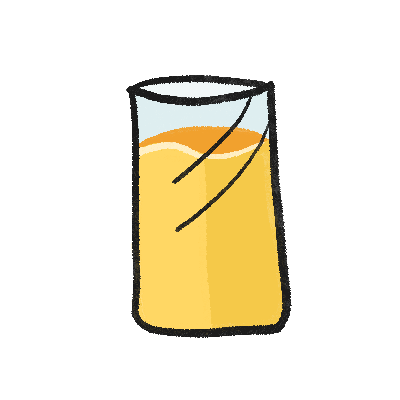

Cuido mi alimentación
Siguiente
Porque son muy salados
Porque no aportan nutrientes
Porque proporcionan muchas grasas
Cuido mi alimentación
Siguiente
Desayuno de Luis
Leche
Galletas
Verduras y frutas
Cereales y tubérculos
Leguminosas y orígen animal
Ninguno
Desayuno de Alejandra
Sandwich
de jitomate y aguacate
Manzana
Agua
Verduras y frutas
Cereales y tubérculos
Leguminosas y orígen animal
Ninguno
Desayuno de Margarita
Burrito
de huevo con frijoles
Yogurt
con fruta

Jugo
de naranja
Verduras y frutas
Cereales y tubérculos
Leguminosas y orígen animal
Ninguno
Desayuno de Rafael
Torta
de chilaquiles
Bolsa de papas
fritas
Refresco
Verduras y frutas
Cereales y tubérculos
Leguminosas y orígen animal
Ninguno
Cuido mi alimentación
Finalizar